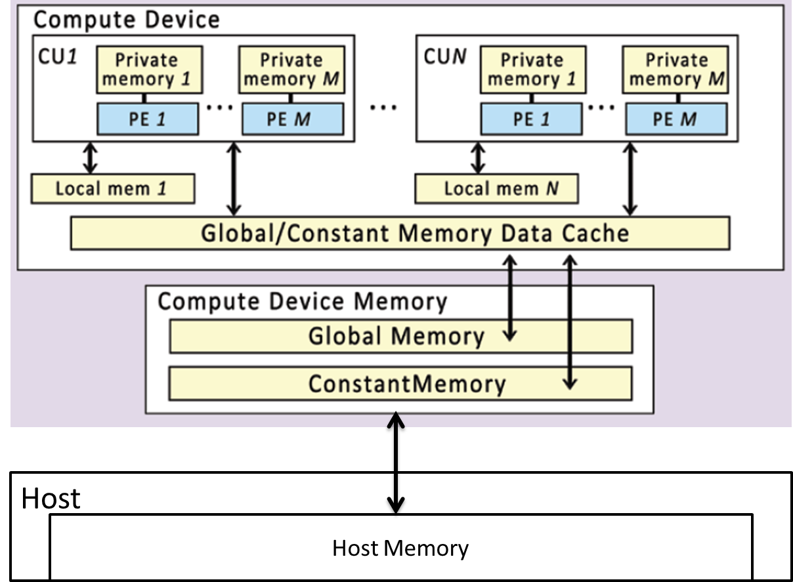

Platform:
Device:
Context:
Command Queue:
Simple Kernel for addition:
__kernel void add(__global float* a, __gloabl float* b, __global float* c) {
const uint i = get_global_id(0);
c[i] = a[i] + b[i];
}
OpenCL C API Example:
...
result = clBuildProgram(program, 0, NULL, NULL, NULL, NULL);
if (r != CL_SUCCESS) {
cl_device_id device_id [16];
clGetContextInfo(context, CL_CONTEXT_DEVICES, sizeof(device_id),
&device_id, NULL);
clGetProgramBuildInfo(program, device_id [0], CL_PROGRAM_BUILD_LOG,
sizeof(buffer) - 1, buffer, &size);
...
}
cl.hpp and a corresponding OpenCL library.find_package(OpenCL REQUIRED) include_directories(SYSTEM ${OpenCL_INCLUDE_DIRS}) target_link_libraries(EXECUTABLE ${OpenCL_LIBRARIES})<boost/compute.hpp> or <boost/compute/xxx.hpp>Setup (simple):
#include <boost/compute.hpp>
#include <iostream>
#include <vector>
namespace compute = boost::compute;
int main() {
auto device = compute::system::default_device();
std::cout << device.name() << std::endl; // Intel(R) HD Graphics 4600
compute::context context(device);
compute::command_queue command_queue(context, device);
# Create a sample vector on the host
// generate random data on the host
const size_t host_vector_size = 10000;
std::vector<float> host_vector(host_vector_size);
std::generate(host_vector.begin(), host_vector.end(), rand);
Transfer from host to device:
compute::vector<float> device_vector(host_vector.size(), context);
compute::copy(host_vector.begin(),
host_vector.end(),
device_vector.begin(),
queue);
Perform the sorting:
compute::sort(device_vector.begin(), device_vector.end(), queue);
compute::copy(device_vector.begin(),
device_vector.end(),
host_vector.begin(),
queue);
return 0;
}
Functions, Closures, Lambdas:
float cutoff = 42.0;
BOOST_COMPUTE_CLOSURE(bool, is_smaller, (float value), (cutoff),
{
return value < cutoff;
});
auto all_elements_smaller =
boost::compute::all_of(device_vector.begin(),
device_vector.end(),
is_smaller, queue);
boost::compute::function<bool(float)> is_smaller_2 =
return boost::compute::lambda::_1 < cutoff;
auto all_elements_smaller2 =
boost::compute::all_of(vectors.begin(),
vectors.end(),
is_smaller_2,
queue);